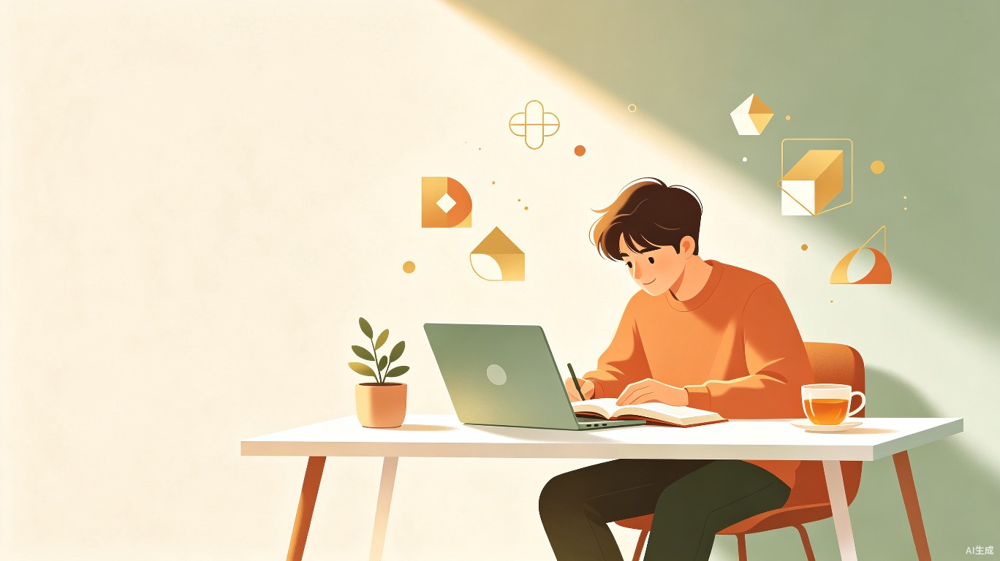
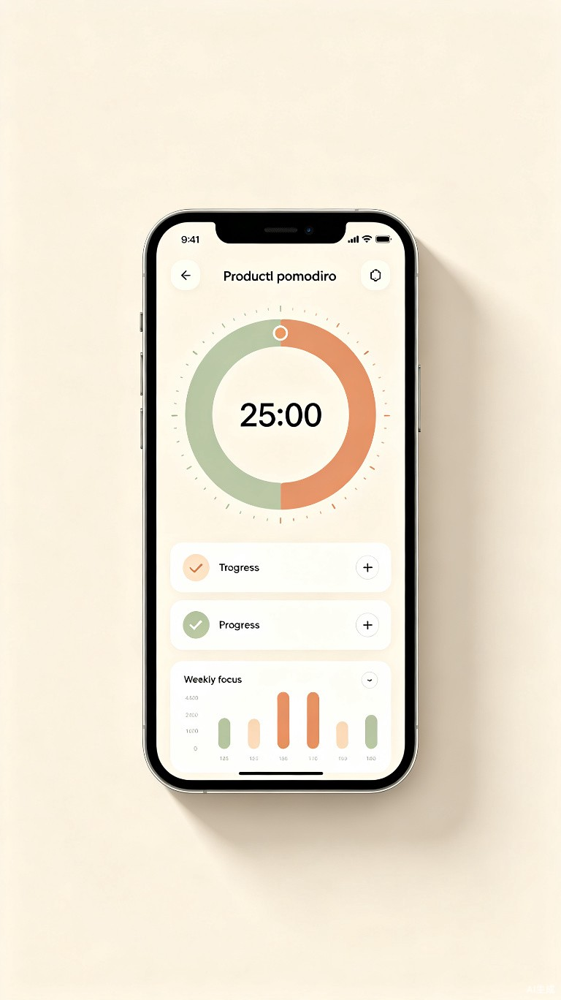

在信息爆炸的时代，专注力已成为最稀缺的资源
现代社会信息爆炸，人们注意力被碎片化内容不断切割，导致学习效率低下、拖延严重，难以保持深度专注状态。手机通知、社交媒体、短视频无时无刻不在争夺我们的注意力。
作为一名学生，深刻体会到在手机和各种 App 的诱惑下，专注学习变得越来越难。市面上的时间管理工具功能繁杂、操作复杂，反而增加了使用门槛，无法真正帮助用户建立自律习惯。
一款帮助用户专注学习、培养自律习惯的移动端 App（支持 iOS / Android），通过番茄工作法、任务管理、数据统计等功能，让用户找回深度专注的能力。
深入了解目标用户的需求与困境，是产品设计的起点
手机通知频繁弹出，注意力难以持续集中，学习效率大打折扣。
学习过程缺乏可视化的进度反馈，难以获得成就感，容易半途而废。
计划制定了很多，但执行率低，时间管理一团糟，陷入恶性循环。
没有有效的自我监督机制，拖延成性，总在 deadline 前熬夜赶工。
使用场景：在家自习、图书馆学习、办公室处理任务、备考冲刺等一切需要保持专注的场景
核心功能一目了然，让专注回归本质

我们精心打磨每一个功能，确保它们真正服务于「提升专注力」这一核心目标。
不仅是一款工具，更是一种生活方式的倡导
使用番茄工作法可以将任务完成时间缩短 25% 以上。通过科学的专注-休息节奏，帮助用户进入心流状态，有效提升学习和工作效率。
通过连续打卡、成就系统和数据反馈，帮助用户建立长期的自律习惯，让专注成为一种下意识的行为模式。
在数字化时代，专注力已成为稀缺资源。「专注时光」倡导健康的数字生活方式，培养用户的自律意识和时间管理能力。
深度工作是当下知识经济时代最有价值的能力之一，而培养这种能力的第一步，就是学会管理自己的注意力。